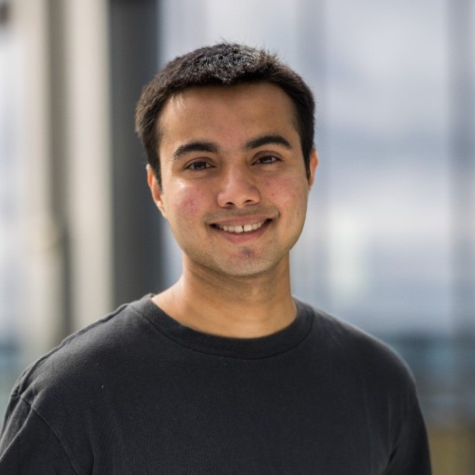

Sarthak Kamat
sartk at berkeley dot edu
I'm a research resident at Berkeley AI Research advised by Trevor Darrell and Ilija Radosavovic. I'm working on learning motor control for humanoid robots with transformers.
I studied Computer Science at UC Berkeley from 2020 - 2023, where I graduated with highest distinction.
Research
- Humanoid Locomotion as Next Token PredictionIlija Radosavovic, Bike Zhang, Baifeng Shi, Jathushan Rajasegaran,
Sarthak Kamat, Trevor Darrell, Koushil Sreenath, Jitendra Malik - Revisiting Generalizability in Deepfake DetectionSarthak Kamat, Shruti Agarwal, Trevor Darrell, Anna RohrbachICCV 2023 oral
- Surface Spherical Encoding and Contrastive Learning for Virtual Bone Shape AgingFrancesco Caliva*, Sarthak Kamat*, Alejandro Morales Martinez, Sharmila Majumdar, Valentina PedoiaMIDL 2021 special issue
Projects
- In-Hand Cube ReorientationI trained an RL policy for in-hand cube reorientation with the Allegro hand, in the IsaacGym simulator. The model gets RGB pixels in, and outputs motor actions.
- Raytracing Schwarzschild Black HolesAseem Doriwala, Sarthak Kamat, Vincent Lim, Jeremy FergusonCS 184: Computer Graphics, Project Showcase Winner, 2023
- NP-Hard Combinatorial OptimizationAraav Patel, Sarthak Kamat, Vincent Lim4th place out of 180, CS 170 Fall 2021
Other Experience
- Hudson River TradingAlgorithm Developer Intern (summer 2023)I trained low-latency models for automated trading, and wrote algorithms for arbitrage detection in C++.
- Berkeley Vision LabDeepfake Detection Researcher (summer 2022 - spring 2023)I worked on building generalizable deepfake detection algorithms with Anna Rohrbach and Shruti Agarwal.
- UCSF Center for Intelligent ImagingComputer Vision Researcher (summer 2021)I trained a 3D generative model for virtual bone shape aging to model the onset of osteoarthritis. I was mentored by Francesco Caliva and Valentina Pedoia.
Teaching
- Course Assistant and Reader for EECS 127 (Optimization Models in Engineering), Spring 2022.
- Academic Intern for CS 61A in Fall 2022, the intro CS class at UC Berkeley.
- I taught machine learning to middle schoolers at public libraries in San Jose with Sahil Jain.
Misc
- Africa by Toto on guitar.